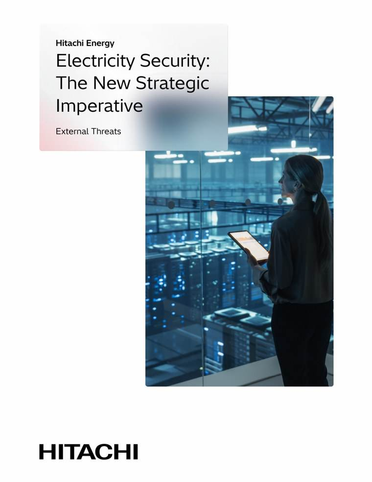

Conectando cada horizonte
Líneas de transporte que llegan a cada comunidad, y por qué eso es ya una cuestión de seguridad nacional.
Generar energía limpia es la mitad de la batalla. Las renovables y las megaciudades exigen una red completamente reinventada: una nueva autopista energética, construida en todas las geografías y que llegue a cada horizonte. Y en los últimos años algo ha cambiado. El cable dejó de ser solo infraestructura. Se convirtió en estrategia.
La nueva primera línea
La AIE lo llama la Era de la Electricidad. En 2024, la demanda de electricidad creció aproximadamente el doble de rápido que el consumo total de energía, y se prevé que siga creciendo un 3,6% al año hasta 2030. La electricidad es solo alrededor del 21% del consumo final de energía, pero sostiene más del 40% de la economía mundial. Lo que antes era una cuestión de petróleo y gas se ha convertido en una cuestión de red eléctrica, y la seguridad eléctrica es ya un pilar central de la seguridad nacional.
A diferencia de los combustibles, la electricidad no se puede guardar en depósitos ni desviar en barcos. La oferta y la demanda se equilibran en tiempo real, así que una interrupción en cualquier punto de la cadena, de la generación a las redes y los controles digitales, puede provocar un golpe inmediato en toda la economía.
Tres amenazas, una red
El informe que hay detrás de esta historia señala tres amenazas externas crecientes. Las cadenas de suministro de transformadores, equipos de alta tensión y cables están concentradas, acumulan retrasos y están cada vez más politizadas. Los atacantes combinan ya lo físico y lo digital: un ciberataque de 2025 contra la infraestructura eléctrica de Polonia tuvo como objetivo más de 30 plantas renovables y estuvo a punto de provocar un apagón, y en 2026 incendios coordinados afectaron a los puentes de cables de Berlín. Y los riesgos climáticos siguen superando a unas infraestructuras construidas para un pasado más benigno, como demostró la tormenta invernal Uri en Estados Unidos con un coste de decenas de miles de millones.

La resiliencia es un cable
Una comunidad con una buena conexión a la red tiene opciones: industria, educación, sanidad, crecimiento. Una comunidad sin ella espera. Por eso la respuesta se mide en obras, no en palabras. Solo para conectar el futuro energético limpio de Europa hacen falta más de un billón de dólares de inversión en redes. Más de 9.000 millones de dólares invertidos en capacidad y en personas. Uno de cada cuatro equipos de aparamenta de alta tensión instalados en el mundo, una base instalada en más de 140 países y el liderazgo en tecnología sin SF6.
El informe propone seis pasos que convierten la resiliencia de eslogan en plan: una planificación del sistema coordinada y a más largo plazo, flexibilidad en todo el sistema, cadenas de suministro diversificadas y aseguradas, reservas estratégicas de tecnologías críticas, digitalización y conocimiento de la situación acelerados, y los profesionales cualificados para gestionarlo todo. Los países que actúen ahora protegerán a sus ciudadanos y liderarán la próxima década de competencia industrial. Los que esperen lo pagarán en empleo, crecimiento y autonomía estratégica.

Seguridad eléctrica: el nuevo imperativo estratégico
El documento de posición completo: tres amenazas crecientes para los sistemas eléctricos del mundo, y las seis acciones que las responden.